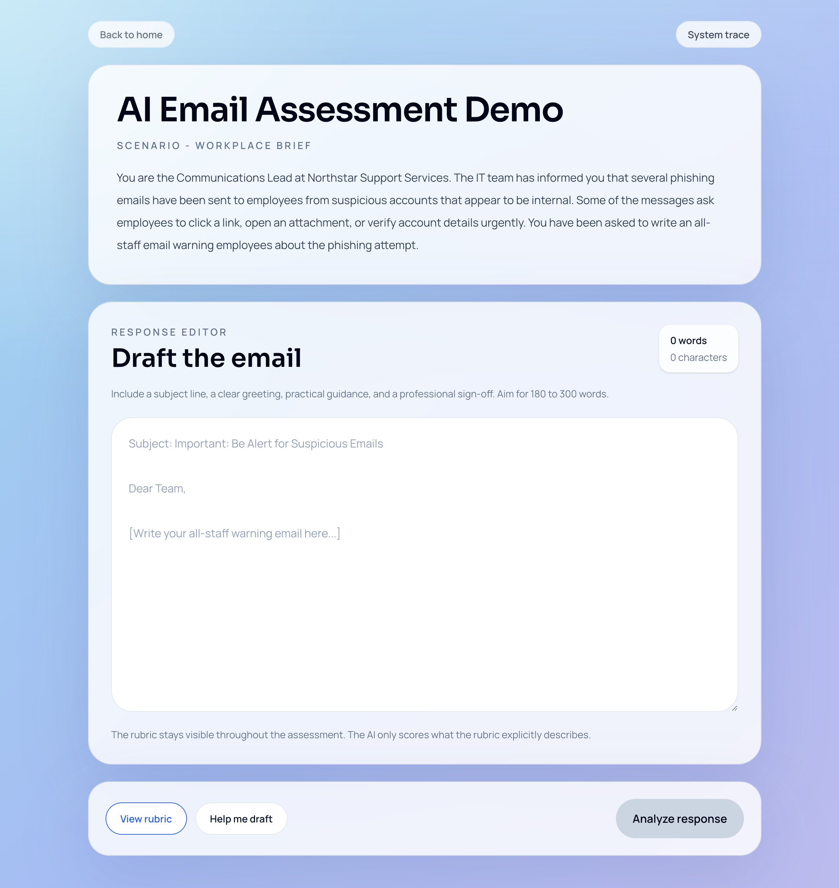

Exploring how AI-enabled interactions, visible rubrics, and authentic workplace tasks can create more adaptive, feedback-rich assessment experiences than traditional pre-configured testing.
View Live Demo →
At a Glance
Many digital assessments still depend on multiple-choice questions, recall checks, or static answer logic. Those formats are efficient, but they rarely reflect how people actually communicate or perform at work.
I'm building a proof of concept for an AI-enabled assessment product that explores a different model: authentic workplace tasks, visible rubric criteria, optional drafting support, and structured feedback that feels more like coaching than grading.
The current prototype asks learners to write an all-staff phishing warning email in response to a workplace scenario. They can review the same rubric the evaluator uses, optionally access drafting support, submit their response for analysis, and receive criterion-level feedback plus a suggested rewrite.
What this proof of concept is demonstrating is a credible alternative to traditional pre-configured assessment logic: authentic learner performance, transparent scoring criteria, traceable AI behavior, and a reviewer-facing system trace that makes the product direction easier to inspect and discuss.
Overview
This project starts from an instructional design problem rather than a technology-first brief. In many workplace learning contexts, assessments still over-index on multiple choice, short answer recall, or static "correct answer" logic. Those formats are easy to scale, but they often fail to capture whether someone can produce a real workplace artifact under realistic constraints.
I'm exploring a better pattern: what if the learner completed an authentic communication task, and AI was used not to replace the instructional design, but to operationalize a visible rubric, return criterion-level feedback, and make open-ended practice more scalable?
The use case I'm using is intentionally narrow and credible: writing an all-staff phishing warning email. It is a realistic workplace task, quick to understand, and rich enough to evaluate clarity, tone, structure, and action guidance.
The Challenge
This is not simply a UI exercise or a generic "AI feedback" demo. The core challenge is designing an assessment experience that balances three competing needs. The design problem is not "how do I add AI?" — it is "how do I structure AI so it strengthens the assessment experience without distorting what the assessment is supposed to measure?"
My Approach
I'm approaching this as both an instructional design problem and a product concept — starting from what the learner needs to demonstrate, then building the AI layer to serve that structure.
I'm defining the assessment around a concrete workplace output: an all-staff phishing warning email. From there, I'm clarifying the learner objective, task requirements, expected strengths, and expected weaknesses before treating UI or prompting as the main problem.
Instead of treating feedback as a loose AI text-generation problem, I'm using the rubric as the backbone of the system. That gives the product a stable scoring frame and makes the learner-facing expectations explicit:
I'm deliberately splitting the system into two workflows: an Assist flow (outline, improve draft, and full draft modes) and an Evaluation flow (scores the final learner response against the visible rubric). That separation matters instructionally. Coaching support can be helpful and flexible without contaminating the scoring logic.
I'm designing the AI layer to be inspectable rather than magical. That helps the current prototype feel less like speculative UI and more like a serious systems concept:
Frameworks & Theories Applied
The Solution
The current prototype is a single-scenario web application designed to feel polished enough for a portfolio reviewer to experience directly while still clearly reading as an early product direction.
The reviewer flow matters just as much. A separate System Trace view exposes saved attempts, total scores, model name, prompt version, and timestamps — so the concept can be discussed as a product system rather than just a surface-level interface.
The prototype remains intentionally narrow: one assessment scenario, one visible rubric, one end-to-end learner flow, one reviewer trace view. Rather than simulating an entire LMS or enterprise assessment platform, the focus is on making one scenario feel coherent, inspectable, and believable.
Design Decisions
The learner sees the same rubric the evaluator uses. This is the most important design decision in the project. It improves transparency, gives the learner a fair frame for the task, and prevents the AI from being positioned as a mysterious scoring authority.
I'm using a workplace email instead of a quiz because the product direction is stronger when the learner produces a real artifact. The task is more representative of workplace communication and creates space for better feedback than a pre-authored answer key would allow.
The product distinguishes between help me draft and analyze response. That separation makes the learning experience more credible. Coaching can support the learner, while final analysis remains bounded by the rubric and the submitted text.
Rather than accepting free-form model output, the system requires structured JSON, validates it against schemas, retries if needed, and computes the total score server-side from criterion scores. This makes the prototype more reliable and easier to explain in both product and technical terms.
I'm using a reviewer-facing trace view to make the system legible. In portfolio work, this matters: it shows not just the learner UI, but the underlying logic, saved attempts, and traceability of the AI workflow.
Impact
Because this is an active proof of concept, I'm framing impact in terms of product validation rather than business KPIs.
The current prototype is showing that AI can support a more authentic performance task without abandoning clarity or structure. Learners are asked to produce a realistic workplace artifact, guided by a visible rubric, and receive feedback that is more specific and educational than a typical auto-graded quiz response.
This product direction is currently validating a plausible pattern for AI-enabled assessment:
For hiring managers and collaborators, the prototype makes several capabilities concrete:
The deployed prototype is already proving that the concept can operate end to end:
Reflection
This project keeps reinforcing that AI in learning design is most useful when it is tightly bounded by instructional intent. The value is not coming from adding a chatbot or generating generic feedback. It comes from defining a real performance task, writing a transparent rubric, and designing the AI layer to support that structure rather than bypass it.
It is also reinforcing the importance of scope discipline. Building one scenario well is a stronger move than pretending to have a full assessment platform. The narrow scope creates space to think carefully about prompt behavior, error handling, reviewer trust, and learner experience.
The work is also surfacing important limitations. This should not be positioned as a high-stakes scoring engine. Reliability, calibration, fairness review, and human moderation patterns would all matter much more in a production or certification context than they do in an early-stage proof of concept.
As I continue building the product direction, the next steps are likely to include: